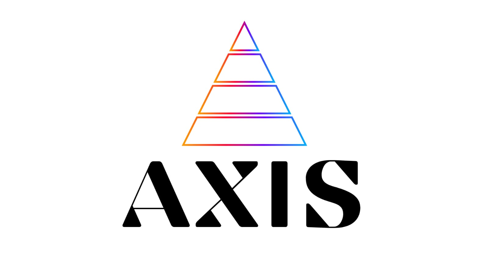

¿Cuántas horas
por semana
pierdes
en tareas que
se repiten?
Lo de todos los días
Las mismas tareas,
una y otra vez
I
Responder lo mismo
×40
II
Pasar datos a mano
×25
III
Hacer seguimiento
×15
Cualquier negocio
puede automatizar
Clínica
Comercio
Constructora
Restaurante
Estudio
Logística
⚙
⚙
Un ejemplo real
Una
carpintería
Juan hace muebles a medida
Sin automatizar
Consultas por todos lados
WhatsApp
“¿Cuánto sale una mesa?”
Instagram
“¿Precio de un placard?”
Mail
“Quiero un presupuesto”
12 sin responder
Presupuesto a mano
y sin seguimiento
Con Axis
Todo pasa
solo
I
Responde al instante
medidas · material · fecha
✓
II
Presupuesto automático
madera + mano de obra
✓
III
Seguimiento a los 3 días
recordatorio si no responde
✓
IV
Avisa al taller
pedido + compra de materiales
✓
V
Entrega y reseña
aviso + pedido de opinión
✓
El resultado
Más tiempo,
más ventas
0
h
recuperadas por semana
12
consultas sin responder
0
min
para tener un presupuesto
*cifras ilustrativas de ejemplo
Tu negocio también
tiene su versión de esto

Automatizá tu negocio →